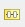
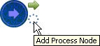
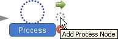
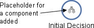
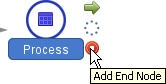

Decision Process Sequences
A Decision Process Sequence provides business users with a user configurable mechanism for determining which processes will be executed at the leaf nodes of a Decision Process Tree. Unlike other trees, such as a Scorecard Tree or a Treatment Tree where different scorecards or different treatment tables are executed, the Decision Process Tree executes more than one type of process depending on what has been defined in the decision process sequence.
Each process added to a Decision Process Sequence will result in an individual column to which a configured process can be attached.
The following illustrates the relationship between a decision process sequence and a decision process tree:
A Decision Process Sequence determines how a record is processed by a decision process tree at runtime. A decision process sequence consists of:
- a starting point and one end point separated by a series of linked processes that will form the columns in the decision process tree
- the order in which the processes will be executed at runtime. This order will correspond to the order of the columns of processes as they will be displayed in the tree
The decision process sequence is used to define what processes can be attached to the leaf nodes of the decision process tree.
The decision process sequence is made up of the following:
 Start Node - the point in the decision process sequence where processing starts. A decision process sequence must always have a start node.
Start Node - the point in the decision process sequence where processing starts. A decision process sequence must always have a start node.
Process Node - a point in the decision process sequence where a process will be executed once assigned to a decision process tree.
 End Node - the point in the decision process sequence where processing ends. A decision process flow must have one end node.
End Node - the point in the decision process sequence where processing ends. A decision process flow must have one end node.
Annotations can be added to any node in the decision process sequence.
The Palette contains a list of system resources that are available for use when the Decision Process Sequence editor is active. The user can drag and drop resources from the Palette window into the Main editor. The content of the Palette is directly related to the access rights of the user.
The decision process sequence palette is made up of one area:
Palette
The palette contains the components that can be used to build the decision process sequence. The contents of the palette will vary depending on the capability of the user and the access rights of the user. The palette when activated by the decision process sequence editor is itself made up of 2 parts:
Flow Builder - Three different nodes that together enable the user to build a decision process sequence.
Processes - Process types that can be assigned to Process nodes.
The Decision Process Sequence tool bar is designed to assist the user in editing the decision process sequence.
Copy component image to clipboard - select to copy the complete flow contained in the editor as an image to the clipboard from where you can paste this image into any appropriate application.
 Zoom in and Zoom out - select to enlarge or reduce the size of the image seen in the editor
Zoom in and Zoom out - select to enlarge or reduce the size of the image seen in the editor
 Zoom To Fit - resizes the image to fit the editor the user has open
Zoom To Fit - resizes the image to fit the editor the user has open
 Zoom Reset - resizes the image back to how it was displayed when the editor was first opened
Zoom Reset - resizes the image back to how it was displayed when the editor was first opened
 Delete all selected nodes - removes all the selected objects from the image
Delete all selected nodes - removes all the selected objects from the image
 Show Grid - the editor will display a grid which will help the user to align an image
Show Grid - the editor will display a grid which will help the user to align an image
Snap to Grid - when selected the editor will align an object the user is placing on the panel in line with the grid
 Align Middle - will align all objects using the horizontal middle point for alignment
Align Middle - will align all objects using the horizontal middle point for alignment
 Align Vertical - will align all objects vertical middle point for alignment
Align Vertical - will align all objects vertical middle point for alignment

 Show all node annotation - will display any annotations that the user has applied
Show all node annotation - will display any annotations that the user has applied
 Hide all node annotations - will hide any annotations that the user has applied
Hide all node annotations - will hide any annotations that the user has applied
The decision process sequence editor enables the user to define how a record is processed by a decision process tree at runtime.
A decision process sequence can be created from the Explorer window.
| You will only be able to add a component type that has been allowed for the selected folder. If it is not allowed it will not be listed and therefore cannot be created. |
To create a decision process sequence
- From the Explorer window right click at the required folder level and select Add component.
- Select Decision Process Sequence.
- In the Create component dialog enter the name of the decision process sequence.
- Select the Open new components in component editor check box.
- Click on the OK button.
The Decision Process Sequence editor will open allowing you to edit a decision process sequence.
The decision process sequence name will be listed in the Explorer window under the selected folder level. The component is identified by the icon.
If you do not wish the editor to open, keep the check box de-selected. From the Explorer window right click on the decision process sequence and select Open.
To define a decision process sequence
A Decision Process Sequence provides business users with a user configurable mechanism for determining which processes will be executed at the leaf nodes of a Decision Process Tree. Unlike other trees, such as a Scorecard Tree or a Treatment Tree where different scorecards or different treatment tables are executed, the Decision Process Tree executes more than one type of process depending on what has been defined in the decision process sequence.
To add a process to a decision process sequence
- With the Decision Process Sequence editor open, left click on either the Start node or another Process node and click on the Add Process Node icon:


A Process will be added to the decision process sequence and automatically linked to the node from which you selected Add Process Node.From the Palette, within the Flow Builder, you can also drag and drop the Process onto the editor.
- Right click on the node and select Rename or double click on the name of the Process node and type a description for it.
- Press Enter on your keyboard.
The system will check to ensure that this name is unique in the decision process sequence and give the Process node the new name. - Repeat steps 1 to 2 as required to add the process nodes you require to the decision process sequence.
| The name of the node can also be changed from within the Properties window. |
You can now add a component to a process in sketch mode.
To add a component to a process node, the user will need to activate the Decision Process Sequence editor. A process that has been assigned to a process node indicates that a specific component will be executed in the decision process tree at this point.
The decision process sequence can be described as being in "sketch" mode if processes have had just placeholders assigned to them.
To add a process to a process node in sketch mode
- With the Decision Process Sequence editor open, click on the Palette and expand Processes.
All the available process will be displayed. - Drag and drop the required component onto the process you require.
The system will change how the process is displayed, from a process that does not have anything assigned
to a one that indicates that the process now has specific process assigned.
- Repeat step 2 to add the processes you require to the processes.

Continue editing your decision process sequence as you require.
A Decision Process Sequence provides business users with a user configurable mechanism for determining which processes will be executed at the leaf nodes of a Decision Process Tree. Unlike other trees, such as a Scorecard Tree or a Treatment Tree where different scorecards or different treatment tables are executed, the Decision Process Tree executes more than one type of process depending on what has been defined in the decision process sequence. Creating a decision process sequence involves adding processes to the decision process sequence and defining the mappings required to enable monitoring and runtime processing. It is the process node that represents the rules that are applied to a record at that particular stage of the processing.
| If you want to stamp out a results data model you need adequate permissions to allow you to edit the logical data source. |
To configure a process the user needs to define where the output from each process and/or junction will be mapped. The type of process added affects the mappings required since at runtime each process will generate different values. When a process is added to a process node the user needs to right click on the node and select Results Mapping. The Define Results Mapping dialog will open where the user can choose to
- map a results logical data model to a logical data source (Generic)
- individually map specific results characteristics to individual characteristics that are already defined in the logical data source (Custom)
|
Irrespective of what method is chosen the system will not allow the user to map characteristics twice or select to map an individual characteristic that has already been mapped from within a model. |
|
Assign Values is not a component. When the user adds it to the assign value Decision Process Sequence it is when the characteristic is dragged to the column in the Decision Process Tree that the mapping is configured. |
The results logical data model for the specific process is added to the logical data source as an embedded logical data model.
For more information see Generic Results Mapping, Custom Results Mapping and Mapped Characteristics
To define the mappings required for the process
- With the decision process sequence editor open and a process added, select the process that has been added to the process node, then right click and select Results Mapping.
- With the
 button visible, in the Results Mapping panel, select the results logical data model and the logical data source where you wish the logical data model to be added.
button visible, in the Results Mapping panel, select the results logical data model and the logical data source where you wish the logical data model to be added. - Click on the Map button.
The results logical data model will be listed below the logical data source you have selected and prefixed with the name of the process node.
The characteristics contained in the results logical data model will be listed in the Mapped Characteristics area. - Rename the results logical data source.
- Click on the Save button.
- Click on the Close button to close the Define Results Mapping dialog.
|
The process or junction node does not have to be fully configured, you can map a sketched process or junction as long as the place holder has been defined. |
The system will display the Define Results Mapping dialog.
The Decision Setter process and the Scorecard process will display more than one results logical data model in the Results Mapping panel.
See Mappings Required for more information on the contents of these logical data models.

{kind=link}
{kind=link}
{kind=link}
{kind=link}
{kind=link}
{kind=link}
{kind=link}
{kind=link}
{kind=link}
{kind=link}
{kind=link}
| Once the results logical data model has been mapped the results logical data model can be renamed. |
| Only one results logical data model type can be mapped for each process; once one has been selected you will not be able to map another results logical data source if the one that is currently mapped has been unmapped. |
The results mappings for the process object will now be defined to enable runtime processing.
An end node is the point in the decision process sequence where processing ends. A decision process sequence must have an end node.
To add an end node
- With the Decision Process Sequence editor open, left click on the process node and click on the Add End node icon.

The End node icon will be added to the decision process sequence and automatically linked to the process.From the Palette, within the Flow Builder, you can also drag and drop the End node onto the editor.
If you have added the End node icon to the flow using the Palette, the End node icon will not be connected to the process.
You will need to left click on the Process,
then click the Connecting Link arrow and drag the arrow to the End node icon to connect it.
{kind=link}
You can now assign a process type to the process nodes in the decision process sequence if required.
Once your decision process sequence is complete you can assign it to a decision process tree.